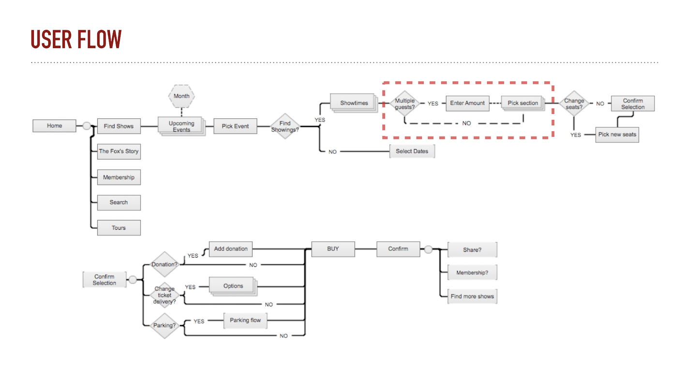

Fox Theater Refresh
Try it outCHALLENGE
Prioritize and design features that address users’ needs while satisfying the business prompt. Work within the current service, design, and brand standards of the company and adapt those to work within the interface standards for either Android or iOS.
APPROACH
We started off with doing a screener survey to extract the best demographics to cater our design. Concurrently, we also did a competitive and heuristics analyses of the current ticket-purchasing process of the Fox Theater website. We identified a couple of pain points such as:
- Finding Seats took multiple screens to illustrate seating
- Difficult to buy seats that are grouped together
- Error messages weren't specific enough
DESIGN THINKING
After doing more surveys to narrow down and identify pain points, we started sketching ideas based on user feedback on the current ticket-purchase flow. Since this was more of a "refresh" rather than an overhaul of the website, we honored the current design while finding ways we could improve the social aspects of the ticket purchasing site and increase ticket sales.
This was a challenge for me because I thought about features as a way to solve issues. The restrictions on the project really pushed my information architecture skills, and I played a lot with the layout of the website and reorganized the flow. Some user testing helped me try a different tactic: I tried some role-playing and tried to think of the analog way to buy tickets for me and a group of friends. This helped me talk aloud the steps and discover that a flip in the ticket purchasing process would significantly improve both: the social aspect and the sales aspect.
To illustrate: right now the process is to specify the section first ... then the amount of seats. This creates problems because the user would have to repeat this process until the appropriate seats (by proximity) are found for their friends. So, by speciyfing the AMOUNT first, THEN the SECTION, it'll be easier for an algorithm to find seats based on proximity rather than dispersed seating.
RESULTS
Fleshing out higher-fidelity models and running more user-tests, we had a lot of great feedback with regards to the design and flow of the website. Users said the ticket purchasing process made more sense and that the page elements like show times, events, prices were layed out much cleaner and not cluttered.
WHAT I LEARNED
This project really pushed me into the information architecture aspect of UX Design. It took me out of my previous developer way of thinking where everything was solved with more features.
Tools
SurveyMonkey, Google Forms, Sketchapp, Invision, Keynote


- 